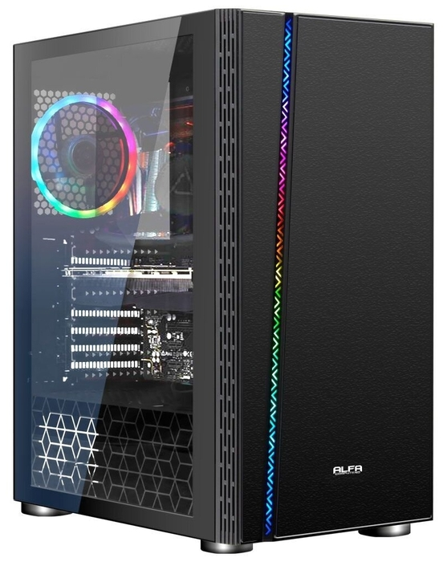

IRu Office 315 MT (1418979) Mini-Tower/Intel Core i5-9400/8 ГБ/1 ТБ HDD/Intel UHD Graphics 630/Windows 10 Pro, черный

- процессор: Intel Core i5-9400 (6x2900 МГц)
- оперативная память: 8 ГБ DDR4 2666 МГц
- накопитель: HDD 1 ТБ
- встроенная видеокарта: Intel UHD Graphics 630
- корпус: Mini-Tower
- мощность блока питания: 400 Вт
- разъемы: USB 3.0, DVI, HDMI, VGA
- операционная система: Windows 10 ProБ
- размеры: 170x350x395 мм
- вес: 7 кг
Описание товара:
Характеристики
- Цвет--> товара чёрный
- Тип--> настольный компьютер
- Типоразмер корпуса--> Midi-Tower
- Оптический привод--> нет
- Операционная система--> Windows 10 Pro
- Процессор--> Intel Core i5-9400
- Частота процессора--> 2900 МГц
- Количество ядер процессора--> 4
- Размер оперативной памяти--> 8
- Ядро--> Coffee Lake-S
| Количесвто фпс в играх | |
|---|---|
| cs go | 350 fps |
| gta 5 | 300 fps |
| dota 2 | 270 fps |
| Ведьмак | 270 fps |